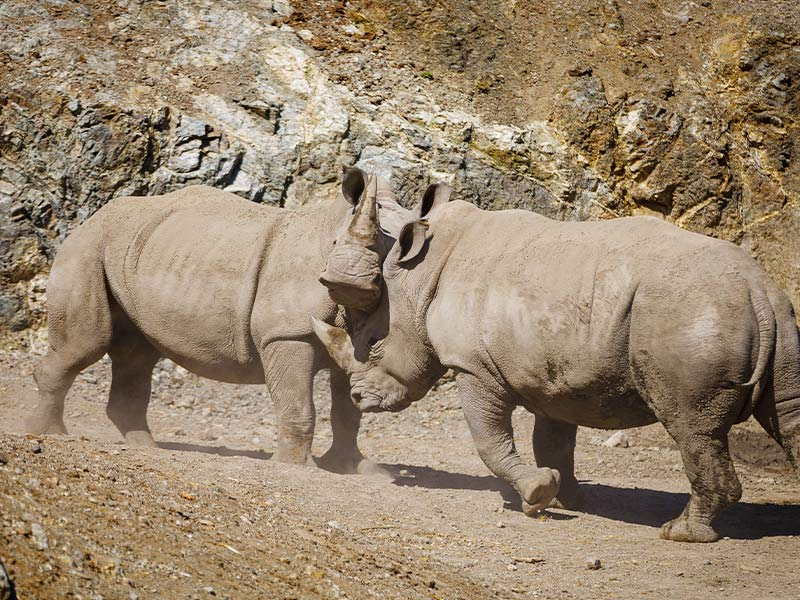

Rinoceronte blanco
(Ceratotherium simum)
El hábitat típico del rinoceronte blanco incluye bosques densos, sabanas y bosques con aberturas cubiertas de hierba, cerca de fuentes de agua.
En la regiones Kenia, Namibia y Zimbabue, aunque la gran mayoría se encuentra en Sudáfrica.
Suele habitar en bosques abiertos y secos, con buenos pastizales para poder alimentarse (de bulbos, hierba y hojas: la base de su dieta).
De costumbres nocturnas, es el más sociable de los rinocerontes y se agrupa en parejas de madres-cría o en manadas de hasta siete ejemplares jóvenes.

- El rinoceronte blanco es el más pesado, con un peso de hasta 2.300 kg (5.000 libras).
- El bebé de un rinoceronte blanco siempre correrá delante de su madre.
- Los rinocerontes blancos, por otro lado, son los más sociables de las 5 especies de rinocerontes y, a menudo, se pueden ver en grupos de hasta 15.
- El cuerno de rinoceronte está hecho de queratina, la misma proteína que forma la base de nuestro cabello y uñas
- Es habitual ver a los rinocerontes rodando en el barro, creando una ‘capa de barro’ protectora para mantenerlos frescos,
evitar que los insectos los piquen y deshacerse de los parásitos.
MENU PRINCIPAL